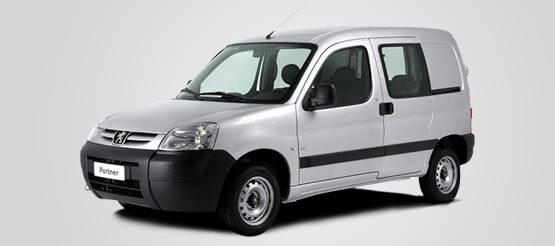

<div class="container my-4">
  <div class="row">
    <div class="col-md-6">
      <h1>PARTNER CONFORT</h1>
      <hr />
      <h5>$4.675,91.-</h5>
      <p>MODELO: 1.6</p>
      
      <p>
        - 12 PRIMERAS CUOTAS REDUCIDAS<br />
        - COMPRA PACTADA: HASTA 2 UNIDADES A PARTIR DE LA CUOTA 24<br />
        - DERECHO DE INSCRIPCIÓN PRORRATEADO EN 24 CUOTAS
      </p>
      <a
        href="http://www.autoplan-peugeot.com.ar/pageValue/carModelTechnicalSheet/2064"
        class="btn btn-primary btn-lg bg-p border-0 rounded-0 peugeot tex my-4"
        >FICHA TECNICA ></a
      >
      <p>
        Administra Círculo de Inversores S.A. de Ahorro para fines determinados.
        Domicilio: Maipú 942 Piso 18 (C1006ACN) Ciudad Autónoma de Buenos
        Aires.<br />Planes de Ahorro Previo por grupo cerrado de 84 meses
        adjudicables por sorteo o licitación.<br />Peugeot PARTNER CONFORT 1.6
        Plan 70/30 con cuota reducida, sin integración mínima. Importe con
        descuento de $1.338,16.- en las cuotas 1 a 6 y de $628,77.- en las
        cuotas 7 a 12. <br />Cuota 1 $4.402,32.- Cuotas 2 a 6 $4.675,91.- Cuotas
        7 a 12 $5.391,05.- Cuotas 13 a 25 $6.024,91.- Cuotas 26 a 48 $5.825,92.-
        Cuotas 49 a 84 $5.308,65- Durante los 84 meses de duración del plan
        70/30 se integrará el 70% del valor de la unidad de ahorro. Alícuota
        extraordinaria del 30%, $169.110.- a abonar dentro de los 30 días de
        comunicada la adjudicación. Derecho de inscripción, $14.092,50<span
          >.-; prorrateado en 24 cuotas e IVA, a opción del
          solicitante.&nbsp;</span
        >
      </p>
      <p>
        Los importes de las cuotas están sujetos a la variación del valor móvil
        del bien elegido e incluyen alícuota, gastos administrativos e IVA. Los
        importes de las cuotas no incluyen el cargo por el Impuesto de Sellos
        para aquellas jurisdicciones en que el mismo sea exigible y no incluyen
        el cargo por el Seguro de Vida, el cual se ajustará mensualmente sobre
        el saldo de deuda del plan.<br />Al retirar el vehículo se abonarán
        gastos de acuerdo a lo establecido en la Resolución General de la
        Inspección Gral. de Justicia Nro. 8/15, art. 26. Plan aprobado por Res.
        IGJ 716 del 22.06.2004. <br />El vehículo de la foto es meramente
        ilustrativo.<br />Precio de lista contado PEUGEOT PARTNER CONFORT 1.6
        $563.700.- Precio Total financiado, incluyendo alícuota, cargos del Plan
        de Ahorro antes mencionados y alícuota extraordinaria $671.651.-<br />La
        comercialización de PEUGEOT PARTNER CONFORT 1.6 con la cuota de
        $4.675,91.- estará vigente hasta el 31/12/2018.<br />Suscríbalo en la
        red de concesionarios oficiales Peugeot.<br />
      </p>
    </div>
    <div class="col-md-6">
      <app-contacto></app-contacto>
    </div>
  </div>
</div>
<!--  -->
